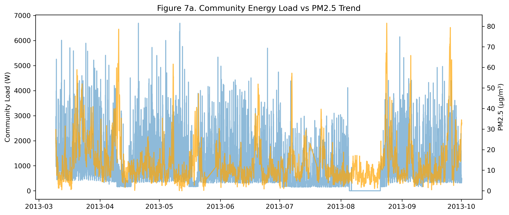
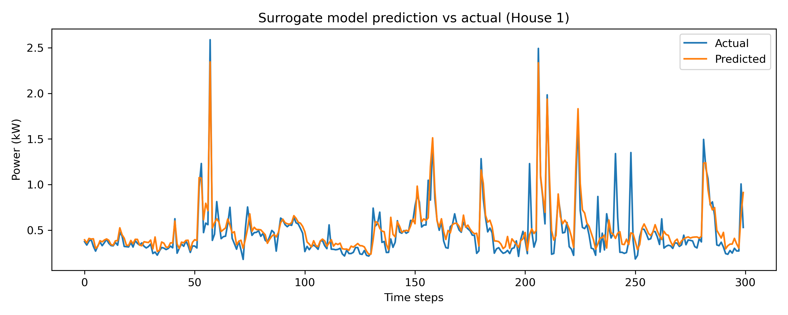
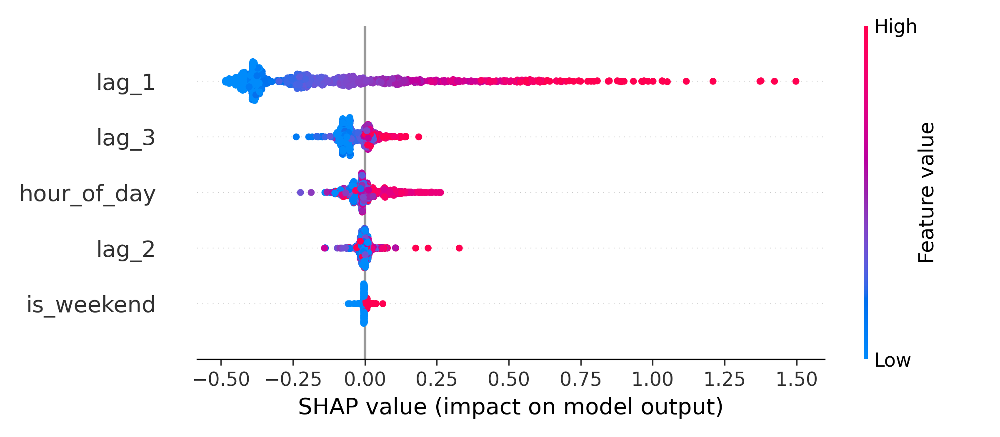
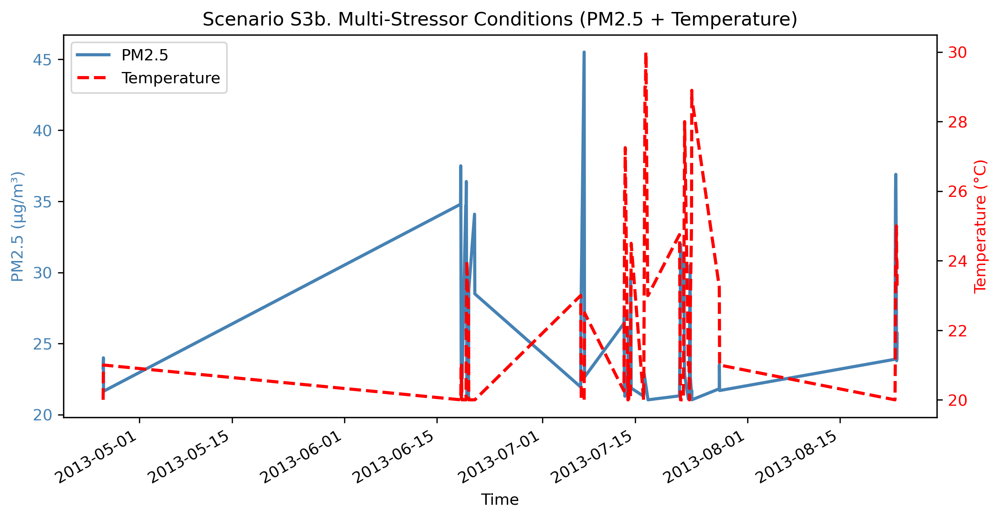
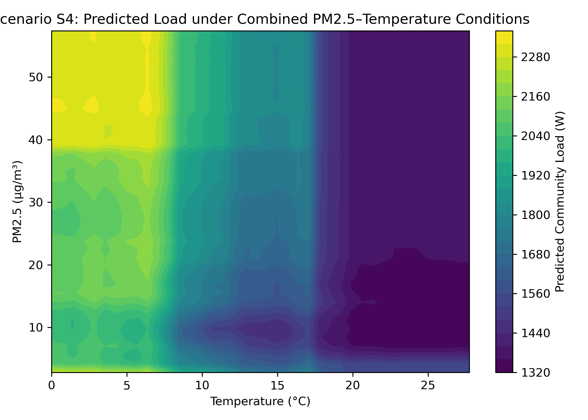
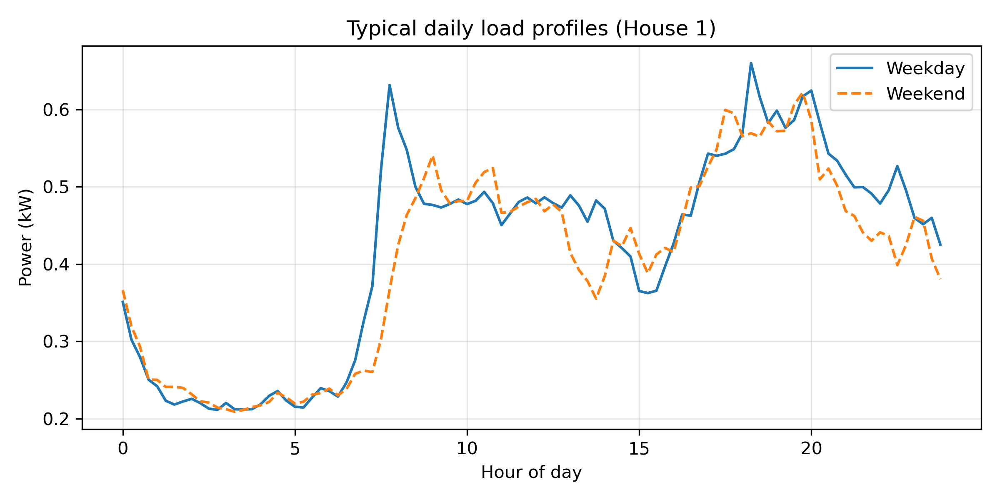

Urban CPS Digital Twin Command Center
A health-aware MBSE-CPS demonstrator showing how harmonised secondary datasets and precomputed surrogate outputs can support advisory environmental intervention logic, human feedback, operator review, and simulated feedback closure.
Urban Exposure Map
North District
Low exposure watch
Central Business Area
Moderate monitoring
Residential Zone
Residential baseline
Industrial Zone
Elevated emissions context
South District
Community monitoring
Scenario Focus
Household baseline context
The spatial layer is schematic. It represents exposure and intervention priority areas without claiming a real city map.
Why this recommendation?
This trace illustrates the data-to-decision pathway used by the advisory digital twin.
Intervention Logic & Response Layer
Analysis Outputs

Framework: load and PM2.5 trend

S1: household surrogate prediction

S2: community explainability summary

S3: high PM2.5 + heat episode context

S4: weather-air-quality sensitivity heatmap

S1: daily end-use profile
Prototype Scope / System Boundary
Included
- CDE harmonisation of secondary datasets
- Scenario-aware exposure interpretation
- Advisory intervention logic
- Human-in-the-loop feedback
- Operator review
- Simulated feedback closure
Not included
- Real-time IoT deployment
- Direct HVAC/device control
- Clinical diagnosis or medical treatment
- Measured post-intervention validation
- Personal health profiling
- Automated actuation